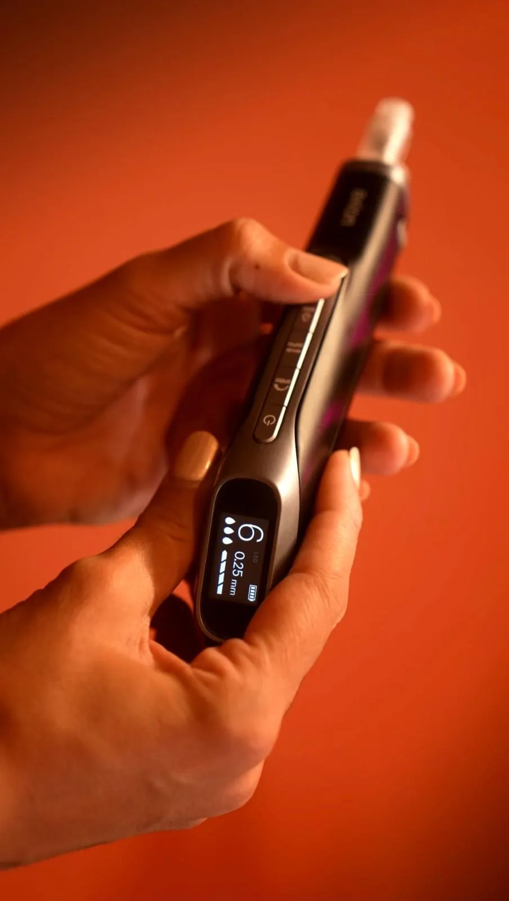

Le microneedling, ou micro-stimulation, est un soin de régénération de la peau proposé à l'institut LUMIA à Manosque. Grâce à de micro-perforations contrôlées, il stimule la production naturelle de collagène et d'élastine, pour une peau plus lisse, plus ferme, plus lumineuse et un grain de peau affiné. Il est réalisé par une infirmière diplômée d'État, avec des actifs brevetés de la marque Mesoestetic.
Sans aucune injection
Le microneedling ne comporte aucune injection de produit. Le stylo médical crée de minuscules canaux à la surface de la peau : c'est la réponse naturelle de régénération de votre peau qui fait le travail, aidée par les actifs appliqués en surface.
Ce que le microneedling traite
Ce soin agit sur les rides et les ridules, le teint terne ou fatigué, le manque d'éclat, le relâchement cutané du visage, les pores dilatés, l'excès de sébum et les cicatrices d'acné. Il est adapté à tous les phototypes de peau, des plus claires aux plus foncées.

Les actifs Mesoestetic aux exosomes
Les actifs utilisés sont de la marque Mesoestetic, brevetés pour leur efficacité grâce aux exosomes et au PDRN présents dans leur formule. Le choix des actifs se fait avec vous avant la séance, selon votre objectif : anti-âge fermeté, anti-âge global, contour des yeux pour les cernes, les poches, les pattes d'oie et la pigmentation, ou dépigmentation pour les taches, le mélasma et les marques post-inflammatoires.
Comment se déroule une séance
Tout commence par un rendez-vous de diagnostic du visage de 30 minutes. Nous discutons de votre projet et de vos problématiques, et nous définissons ensemble le protocole personnalisé. Un questionnaire de santé, un consentement mutuel et une fiche d'information sur le microneedling sont signés avant de pouvoir débuter les soins.
La séance de microneedling dure ensuite 60 minutes et traite le visage et le cou. La LED est incluse lors de la pose du masque, pour apaiser la peau et potentialiser les résultats. Il est également possible de traiter uniquement le décolleté.
Réservez votre diagnostic visage
Le protocole recommandé
Pour une régénération complète et des résultats durables, le microneedling se pratique en cure : une séance tous les quinze jours, pendant six séances. Des séances d'entretien, une fois tous les deux mois, sont ensuite fortement conseillées pour maintenir le bénéfice.
Avant et après la séance
Aucune exposition au soleil ni aux UV dans les sept jours avant et les sept jours après la séance. Une protection solaire SPF 50+ est obligatoire. Les contre-indications, notamment la grossesse et l'allaitement, l'acné inflammatoire, les traitements à base d'isotrétinoïne, les plaies ouvertes, l'herpès, les tatouages sur la zone, les anticoagulants, les maladies auto-immunes à expression cutanée et les antécédents de radiothérapie ou de cancer de moins de cinq ans, sont systématiquement vérifiées lors du diagnostic.
Questions fréquentes sur le microneedling
Le microneedling, est-ce une injection ?
Non, il n'y a aucune injection de produit. Le stylo crée de micro-perforations contrôlées à la surface de la peau, qui déclenchent sa régénération naturelle et font pénétrer les actifs appliqués.
Est-ce que c'est douloureux ?
La sensation est celle de petits picotements, variable selon la zone et la profondeur réglée. La profondeur est adaptée à votre peau et à la zone traitée, et la séance reste confortable.
Combien de séances faut-il prévoir ?
Le protocole conseillé est une cure de six séances, à raison d'une séance tous les quinze jours, pour une régénération complète et des résultats durables. Des séances d'entretien tous les deux mois sont ensuite vivement recommandées.
Est-ce adapté à ma peau ?
Le microneedling convient à tous les phototypes, des peaux claires aux peaux foncées. Un rendez-vous de diagnostic préalable permet de vérifier qu'aucune contre-indication ne s'applique et de choisir les actifs adaptés à votre peau.
Quelles sont les précautions à prendre ?
Aucune exposition au soleil dans les sept jours qui précèdent et les sept jours qui suivent la séance, avec une protection SPF 50+ obligatoire. Le soin est contre-indiqué en cas de grossesse ou d'allaitement, d'acné inflammatoire, de traitement à l'isotrétinoïne, de plaie ouverte, d'herpès, de traitement anticoagulant, ou de radiothérapie et cancer de moins de cinq ans. Tout est vérifié lors du diagnostic.
Le microneedling se marie très bien avec nos soins du visage et avec le LPG visage. Pour les taches pigmentaires installées, découvrez aussi le protocole Cosmelan. Les prix sont détaillés sur la page tarifs, et vous pouvez faire connaissance avec la praticienne.